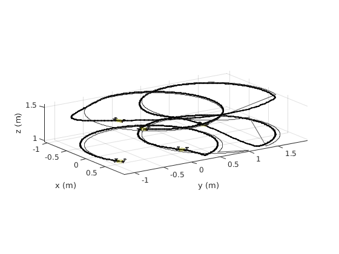

Contents
Useful operations
% restoredefaultpath; matlabrc % close all % clear all clc
include functions
addpath(genpath('./functions'))
disp('testing') % disp(filename) format long % M = dlmread('_1458747408_test_plot_1.txt'); M = dlmread(file_name); time = M(:,1); state = M(:,3:11); stated = M(:,12:20); input_quad = M(:,21:23);
testing
set some definitions
set(0,'DefaultTextInterpreter','latex',... 'DefaultLineLineWidth',1,... 'defaulttextfontsize',12,... 'defaultaxesfontsize',12);
clc close all % remove offset from time instants (so it starts at zero) time = time - time(1); tEND = time(end); % position and velocity of quad pQ = state(:,1:3); vQ = state(:,4:6); % quarotor euler angles eeQ = state(:,7:9)*pi/180; % desired position, velocity and acceleration of quad pd = stated(:,1:3); vd = stated(:,4:6); % ad = stated(:,7:9); hold on plot3(pQ(:,1) ,pQ(:,2) ,pQ(:,3) ,'Color','k','Linewidth',2) plot3(pd(:,1),pd(:,2),pd(:,3),'Color',[0.3 0.3 0.3],'Linewidth',1) num = 4; II = zeros(num+1,1); for i = 0:1:num [minmin, index] = min(abs(time-tEND*i/num)); II(i+1) = index; end for j=1:num+1 pQ_ = pQ(II(j),:)'; eeQ_ = eeQ(II(j),:)'; rot_mat_ = rot_matrix(eeQ_); quad_plot(pQ_,rot_mat_,1,[],0.1,0.1) end xlabel('x (m)') ylabel('y (m)') zlabel('z (m)') % axis equal axis tight view(56,16)
% %% % close all % % t = time - time(1); % tEND = t(end); % % p = state(:,1:3); % pdes = stated(:,1:3); % % auxaux = 1:length(t); % t_aux = ~mod(auxaux,1); % % hold on % % plot(t(t_aux),p(t_aux,1)-pdes(t_aux,1),'-','Color','k') % plot(t(t_aux),p(t_aux,2)-pdes(t_aux,2),'--','Color','k') % plot(t(t_aux),p(t_aux,3)-pdes(t_aux,3),'-.','Color','k') % plot(t(t_aux),sqrt((p(t_aux,1)-pdes(t_aux,1)).^2 + (p(t_aux,2)-pdes(t_aux,2)).^2 + (p(t_aux,3)-pdes(t_aux,3)).^2),'-.','Color','k') % % xlabel('Time (s)') % ylabel('(m)') % % l = legend('$\mathbf{p}_1$',... % '$\mathbf{p}_2$',... % '$\mathbf{p}_3$',... % '$error$'); % set(l,'Interpreter','latex') % % grid on % % %% % close all % % t = time - time(1); % tEND = t(end); % % v = state(:,4:6); % vdes = stated(:,4:6); % % auxaux = 1:length(t); % t_aux = ~mod(auxaux,1); % % hold on % % plot(t(t_aux),v(t_aux,1)-vdes(t_aux,1),'-','Color','k') % plot(t(t_aux),v(t_aux,2)-vdes(t_aux,2),'--','Color','k') % plot(t(t_aux),v(t_aux,3)-vdes(t_aux,3),'-.','Color','k') % % xlabel('Time (s)') % ylabel('(m/s)') % % l = legend('$\mathbf{v}_1$',... % '$\mathbf{v}_2$',... % '$\mathbf{v}_3$'); % set(l,'Interpreter','latex') % % grid on % % % %% % close all % % t = time - time(1); % tEND = t(end); % % auxaux = 1:length(t); % t_aux = ~mod(auxaux,1); % % g_quad = 9.81; % % nn = []; % for i= 1:length(stated(:,7:9)) % pp = pQ(i,:)'; % pp2 = pM(i,:)'; % % n = (pp - pp2)/norm(pp - pp2); % % nn = [nn; n']; % end % % n_des = []; % for i= 1:length(stated(:,7:9)) % ades = stated(i,7:9); % n = (g_quad*[0;0;1] + ades')/norm(g_quad*[0;0;1] + ades'); % % n_des = [n_des; n']; % end % % hold on % % plot(t(t_aux),nn(t_aux,1),'-','Color','k') % plot(t(t_aux),n_des(t_aux,1),'-','Color',[0.5 0.5 0.5]) % % plot(t(t_aux),nn(t_aux,2),'--','Color','k') % plot(t(t_aux),n_des(t_aux,2),'--','Color',[0.5 0.5 0.5]) % % plot(t(t_aux),nn(t_aux,3),'-.','Color','k') % plot(t(t_aux),n_des(t_aux,3),'-.','Color',[0.5 0.5 0.5]) % % xlabel('Time (s)') % % l = legend('$\mathbf{n}_1$',... % '$\mathbf{n}_{1,t}^{\star}$',... % '$\mathbf{n}_2$',... % '$\mathbf{n}_{2,t}^{\star}$',... % '$\mathbf{n}_3$',... % '$\mathbf{n}_{3,t}^{\star}$'); % set(l,'Interpreter','latex') % % grid on % % % %% % % close all % % t = time - time(1); % tEND = t(end); % % w = []; % for i= 1:length(stated(:,7:9)) % pp = pQ(i,:)'; % pp2 = pM(i,:)'; % % vv = vQ(i,:)'; % vv2 = vM(i,:)'; % % n = (pp - pp2)/norm(pp - pp2); % % ww = skew(n)*(vv - vv2)/norm(pp - pp2); % % w = [w; ww']; % end % % w_des = []; % for i= 1:length(stated(:,7:9)) % ades = stated(i,7:9)'; % n_des = (g_quad*[0;0;1] + ades)/norm(g_quad*[0;0;1] + ades); % % jdes = stated(i,10:12)'; % w_eq = skew(n_des)*jdes/norm(g_quad*[0;0;1] - ades); % % w_des = [w_des; w_eq']; % end % % auxaux = 1:length(t); % t_aux = ~mod(auxaux,1); % % hold on % % % plot(t(t_aux),w(t_aux,1),'-','Color','k') % % plot(t(t_aux),w_des(t_aux,1),'-','Color',[0.5 0.5 0.5]) % % plot(t(t_aux),w(t_aux,2),'--','Color','k') % plot(t(t_aux),w_des(t_aux,2),'--','Color',[0.5 0.5 0.5]) % % % plot(t(t_aux),w(t_aux,3),'-.','Color','k') % % plot(t(t_aux),w_des(t_aux,3),'-.','Color',[0.5 0.5 0.5]) % % xlabel('Time (s)') % ylabel('(rad/s)') % % l = legend('$\omega_1$',... % '$\omega_{1,t}^{\star}$',... % '$\omega_2$',... % '$\omega_{2,t}^{\star}$',... % '$\omega_3$',... % '$\omega_{3,t}^{\star}$'); % % set(l,'Interpreter','latex') % % grid on % % % %% % close all % % t = time - time(1); % tEND = t(end); % % u = input_quad; % % auxaux = 1:length(t); % t_aux = ~mod(auxaux,1); % % t_aux = t <= tEND + 0.1; % % hold on % % plot(t(t_aux),0.1*u(t_aux,1),'-','Color','k') % plot(t(t_aux),u(t_aux,2),'--','Color','k') % plot(t(t_aux),u(t_aux,3),'-.','Color','k') % % xlabel('Time (s)') % % ylabel('Input') % % xlim([0 tFINAL]) % % l = legend('$U_1$',... % '$U_2$',... % '$U_3$'); % % set(l,'Interpreter','latex') % % grid on